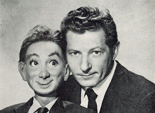
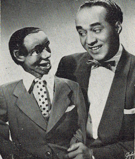
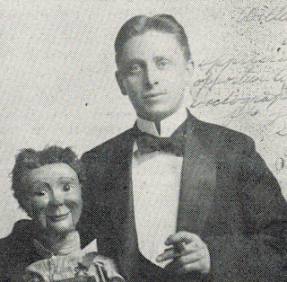
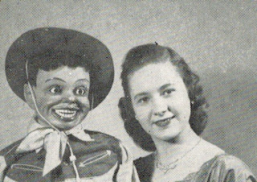
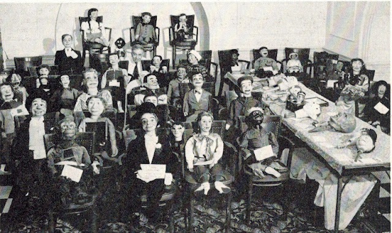

For Sale
4/3/2012
 |
| Danny Kaye with his Glen Cargle figure ("Knock on Wood" Paramount picture.) |
{kind=link}
The photos on this post were all taken from a 1954 issue of THE ORACLE ventriloquist newsletter. A very interesting issue as it is packed with news reports about the vents who gathered in Louisville, Kentucky for the IBM/IBV convention. Many names and much news of the day. A copy of this 24 page historical newsletter is now listed for auction on eBay - see the link below photos.
 |
| Bill Holiday and Jo-Jo, a Marshall figure. Their hand in hand "tap" routine closing out their show was reported as "sensational"! |
{kind=link}
 |
| "The Great Chesterfield" performed his old vaudeville act at the '54 convention, one of 20 acts on the bill. ("The Great Chesterfield" is the father of Howard M. Olson.) |
{kind=link}
 |
| Marie Murphy did not appear at the convention as scheduled but still managed to create a sensation due to the reason for her absence - she eloped! |
{kind=link}
 |
| Can you believe W. S. Berger transported to the convention the above sizable number of items from his Vent Haven collection! Several places on the pages of THE ORACLE he lists names of ventriloquists who helped him with the unpacking, display setup, and repacking of the figures and more. (If you look closely, you will find W. S. in this photo.) You can own the rare copy of THE ORACLE from which these items were taken. There's more information about this newsletter on my eBay listing: http://www.ebay.com/itm/290693457935 |
{kind=link}